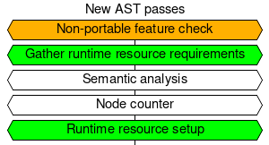
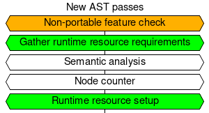

This page serves as a design document for bpftrace AOT compilation support. Design is currently a work-in-progress and will be (somewhat) regularly updated.
Background
- AOT is motivated by the following technical concerns:
- Shipping/running LLVM onto prod hosts is resource-heavy (binary size, memory consumption)
- Time to first trace is slow for dynamic bpftrace b/c we have to do all the AST passes AND setup runtime resources, where for AOT bpftrace we can just do runtime resource setup
- Dynamically compiled bpftrace scripts cannot be easily signed
Overall design
- Ship a fully executable runtime shim with bpftrace
- When compiling a AOT bpftrace program:
- Build the metadata
- Build the bytecode
- Make a copy of runtime shim and store metadata + bytecode into a special ELF section (this is the final executable)
- When the shim runs, it knows to look inside itself for the metadata + bytecode and start execution
Current architecture

Proposed architecture
AST passes:
 => 
=> 
Simplified architecture (some unchanged parts omitted):

Key:
- Green -> added to all codepaths
- Orange -> added to AOT compile codepath
AOT execution:

Unsolved problems
CodegenLLVM relies on runtime state in BPFtrace
- Async argument IDs (
printf_id_, cat_id_, etc)
- Codegen for
elapsed embeds map FD
- Positional parameters are hardcoded into bytecode
- Any others?
- Some features rely on per-host properties
kaddr()uaddr()cgroupid()non-absolute addr uprobe probes
- uprobes addresses are actually resolved at runtime so it’s portable
- USDT, and
watchpoint probes
- Any others?
- Generate CO-RE field access instructions
- Will need to generate some kind of access identifier (eg.
1:0:3:4)
- Runtime still use bcc (eg. symbolization) and bcc links LLVM
- Punt all loading to libbpf to gain access to CO-RE features?
- Map creation, map FD fixup, extern symbol resolution
- Reason is that some new bpf helpers (bpf_per_cpu_ptr()) require BTF ID to be in immediate operand of certain instructions, and we may not want to redo/maintain that stuff in bpftrace
- Another reason is that in the future we may want to link other BPF programs in (like DWARF-based stack walker)
- Reasons not to completely switch over to libbpf include:
- Large amount of bpftrace code modifications
- Loss of ability to mock out maps / unit testing
- Extra overhead constructing ELF files for libbpf to work with
- If there’s ever a bug in libbpf or we need a new feature, we are beholden to distros shipping an updated libbpf. We cannot vendor either as it’s not going to fly with the distros.
Notes
- Can save metadata into special ELF section; fortunately we don’t need to worry about compatability as an AOT executable is hermetic
- Must ship a stubbed (no bytecode) AOT executable that knows to look inside itself for bytecode
- Should be simple enough with cmake
- Will need to relocate pseudo-map-FDs at runtime to FDs of created maps (see BPF_PSEUDO_MAP_FD in libbpf)
- Create
RuntimeResources abstraction
- That:
- Describes all the runtime resources that need to be setup before a script is run
- Can initialize all the resources given a
BPFtrace &
- Can be serialized/deserialized
- Can just be a public field:
BPFtrace::runtime_resources_
- So it can be easily mocked out for tests
- So semantic analyser can add resources
Future goals
- User can select features to enable in codegen
- eg. “tell codegen that the target host has XXX feature”
- Emitted bytecode takes advantage of CO-RE to be more compatible on other hosts
Towards a functional prototype